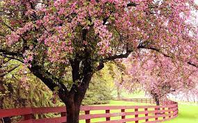

seasons of the year
"The season after winter and before summer, in which vegetation begins to appear, in the northern hemisphere from March to May and in the southern hemisphere from September to November" as described by the Oxford dictionary. Spring is a lot like the reverse Autum. It starts off with sub par weather and starts to get into summer like weather. Spring brings a lot of sports depending on where you live as well, as most sports are played in either the Spring or Autum.